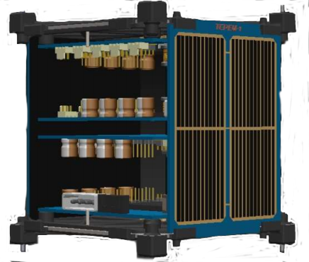
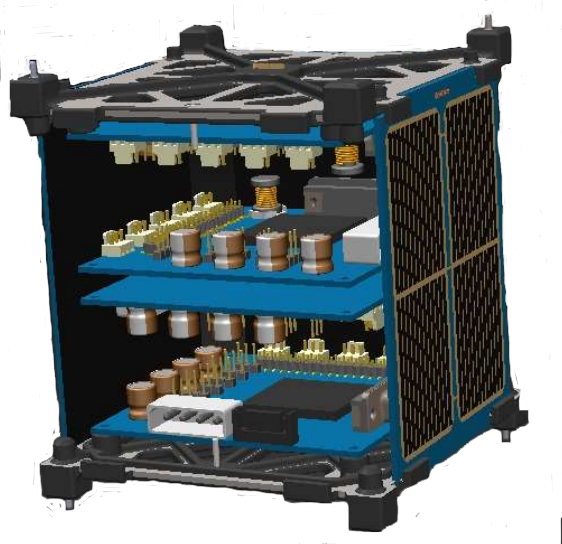
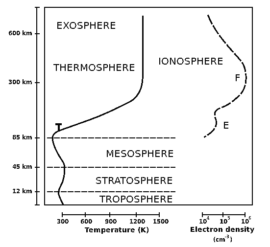

Misiones
TEPEU-1
TEPEU-2
TEPEU-3
TEPEU-1
La misión espacial TEPEU-1 considera dentro de sus objetivos científicos fundamentales contribuir al conocimiento de la ionosfera sobre México. Para ello, se estima que el satélite tomará datos magnéticos y ionosféricos entre 450 y 650 km de altura orbital sobre un entorno de 500 km alrededor del punto de coordenadas 23.6345°N y 102.5528°W, siguiendo para ello una órbita heliosíncrona.

Satélite tipo Cubesat
La misión busca integrar, a partir de elementos comerciales, un satélite pequeño tipo Cubesat de 1 unidad, insertarlo en una órbita tipo LEO, con una altura orbital entre los 450 a 650 km (dependiendo de las condiciones del lanzamiento), con fines de investigación científica y demostración tecnológica
Estudio de la ionosfera
Se busca implementar un experimento para el desarrollo de la instrumentación de un módulo de carga útil orientado al estudio de la región intermedia de la ionosfera y su afectación por eventos de clima espacial y otros fenómenos geofísicos, basado en la evaluación operativa en órbita del magnetómetro comercial MAG3110. da la baja latitud de la zona de estudio, será posible analizar la posible ocurrencia de burbujas ionosféricas y su efecto en el posicionamiento satelital y las comunicaciones.

